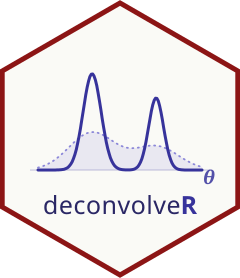
Empirical Bayes Deconvolution
Balasubramanian Narasimhan and Bradley Efron
2026-08-05
Source:vignettes/deconvolution.Rmd
deconvolution.RmdA simulation example
We start with a simulated Poisson example where the \(\Theta_i\) are drawn from a chi-squared density with 10 degrees of freedom and the \(X_i|\Theta_i\) are Poisson with expectation \(\Theta_i:\)
\[ \Theta_i \sim \chi^2_{10} \mbox{ and } X_i|\Theta_i \sim \mbox{Poisson}(\Theta_i) \]
The \(\Theta_i\) for this setting,
with N = 1000 observations can be generated as follows.
Next, the \(X_i|\Theta_i\), for each
of nSIM = 1000 simulations can be generated as below.
We take the discrete set \(\mathcal{T}=(1,
2, \ldots, 32)\) as the \(\Theta\)-space and apply the
deconv function in the package deconvolveR to
estimate \(g(\theta).\)
library(deconvolveR)
tau <- seq(1, 32)
results <- apply(data, 2,
function(x) deconv(tau = tau, X = x, ignoreZero = FALSE,
c0 = 1))The default setting for deconv uses the
Poisson family and a natural cubic spline basis of degree 5
as \(Q.\) The regularization parameter
for this example (c0) is set to 1. The
ignoreZero parameter indicates that this dataset contains
zero counts, i.e., there zeros have not been truncated. (In the
Shakespeare example below, the counts are of words seen in the canon,
and so there is a natural truncation at zero.)
Some warnings are emitted by the nlm routine used for
optimization, but they are mostly inconsequential.
Since deconv works on a sample at a time, the result
above is a list of lists from which various statistics can be extracted.
Below, we construct a table of values for various values of \(\Theta\).
g <- sapply(results, function(x) x$stats[, "g"])
mean <- apply(g, 1, mean)
SE.g <- sapply(results, function(x) x$stats[, "SE.g"])
sd <- apply(SE.g, 1, mean)
Bias.g <- sapply(results, function(x) x$stats[, "Bias.g"])
bias <- apply(Bias.g, 1, mean)
gTheta <- pchisq(tau, df = 10) - pchisq(c(0, tau[-length(tau)]), df = 10)
gTheta <- gTheta / sum(gTheta)
simData <- data.frame(theta = tau, gTheta = gTheta,
Mean = mean, StdDev = sd, Bias = bias,
CoefVar = sd / mean)
table1 <- transform(simData,
gTheta = 100 * gTheta,
Mean = 100 * Mean,
StdDev = 100 * StdDev,
Bias = 100 * Bias)The table below summarizes the results for some chosen values of \(\theta .\)
| theta | gTheta | Mean | StdDev | Bias | CoefVar |
|---|---|---|---|---|---|
| 5 | 5.6191465 | 5.4416722 | 0.3635378 | -0.1235865 | 0.0668063 |
| 10 | 9.1646990 | 9.5316279 | 0.4917673 | 0.2588187 | 0.0515932 |
| 15 | 4.0946148 | 3.3421426 | 0.3119862 | -0.0683187 | 0.0933492 |
| 20 | 1.1014405 | 0.9810001 | 0.2246999 | -0.1225092 | 0.2290519 |
| 25 | 0.2255788 | 0.1496337 | 0.0677919 | 0.0602422 | 0.4530522 |
Although, the coefficient of variation of \(\hat{g}(\theta)\) is still large, the \(g(\theta)\) estimates are reasonable.
We can compare the empirical standard deviations and biases of \(g(\hat{\alpha})\) with the approximation given by the formulas in the paper.
library(ggplot2)
library(cowplot)
theme_set(theme_get() +
theme(panel.grid.major = element_line(colour = "gray90",
size = 0.2),
panel.grid.minor = element_line(colour = "gray98",
size = 0.5)))
p1 <- ggplot(data = as.data.frame(results[[1]]$stats)) +
geom_line(mapping = aes(x = theta, y = SE.g), color = "black", linetype = "solid") +
geom_line(mapping = aes(x = simData$theta, y = simData$StdDev), color = "red", linetype = "dashed") +
labs(x = expression(theta), y = "Std. Dev")
p2 <- ggplot(data = as.data.frame(results[[1]]$stats)) +
geom_line(mapping = aes(x = theta, y = Bias.g), color = "black", linetype = "solid") +
geom_line(mapping = aes(x = simData$theta, y = simData$Bias), color = "red", linetype = "dashed") +
labs(x = expression(theta), y = "Bias")
plot_grid(plotlist = list(p1, p2), ncol = 2)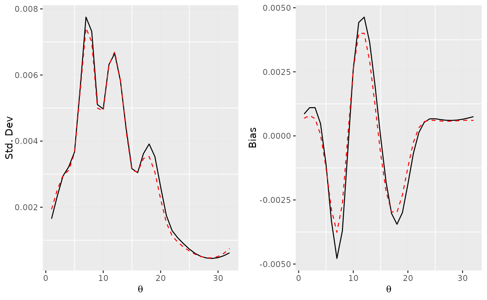
The approximation is quite good for the standard deviations, but a little too small for the biases.
The Shakespeare data
Here we are given the word counts for the entire Shakespeare canon in
the data set bardWordCount. We assume the \(i\)th distinct word appeared \(X_i \sim Poisson(\Theta_i)\) times in the
canon.
## num [1:100] 14376 4343 2292 1463 1043 ...We take the support set \(\mathcal{T}\) for \(\Theta\) to be equally spaced on the log-scale and the sample space for \(\mathcal{X}\) to be \((1,2,\ldots,100).\)
Using a regularization parameter of c0=2 we can
deconvolve the data to get \(\hat{g}.\)
result <- deconv(tau = tau, y = bardWordCount, n = 100, c0=2)
stats <- result$statsThe plot below shows the Empirical Bayes deconvoluation estimates for the Shakespeare word counts.
ggplot() +
geom_line(mapping = aes(x = lambda, y = stats[, "g"])) +
labs(x = expression(log(theta)), y = expression(g(theta)))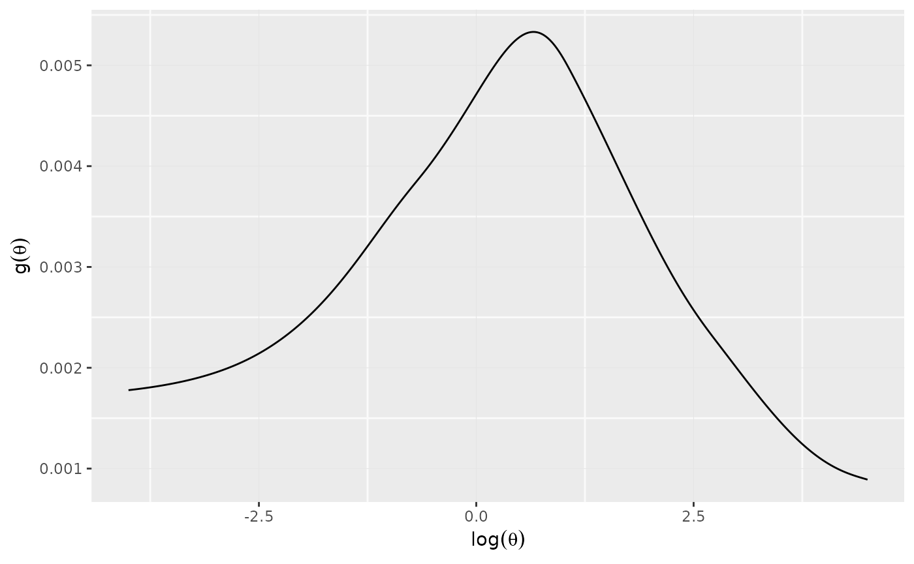
The quantity \(R(\alpha)\) in the
paper (Efron, Biometrika 2015) can be extracted from the
stats list; in this case for a regularization parameter of
c0=2 we can print its value:
print(result$S)## [1] 0.005534954The stats list contains other estimates quantities as
well.
As noted in the paper citing this package, about 44 percent of the total mass of \(\hat{g}\) lies below \(\Theta = 1\), which is an underestimate. This can be corrected for by defining \[ \tilde{g} = c_1\hat{g} / (1 - e^{-\theta_j}), \] where \(c_1\) is the constant that normalizes \(\tilde{g}\).
When there is truncation at zero, as is the case here, the
deconvolveR package now returns an additional column in
stats[, "tg"] which contains this correction for
thinning. (The default invocation of deconv
assumes zero truncation for the Poisson family, argument
ignoreZero = FALSE).
d <- data.frame(lambda = lambda, g = stats[, "g"], tg = stats[, "tg"], SE.g = stats[, "SE.g"])
indices <- seq(1, length(lambda), 5)
ggplot(data = d) +
geom_line(mapping = aes(x = lambda, y = g)) +
geom_errorbar(data = d[indices, ],
mapping = aes(x = lambda, ymin = g - SE.g, ymax = g + SE.g),
width = .01, color = "blue") +
labs(x = expression(log(theta)), y = expression(g(theta))) +
ylim(0, 0.006) +
geom_line(mapping = aes(x = lambda, y = tg), linetype = "dashed", color = "red")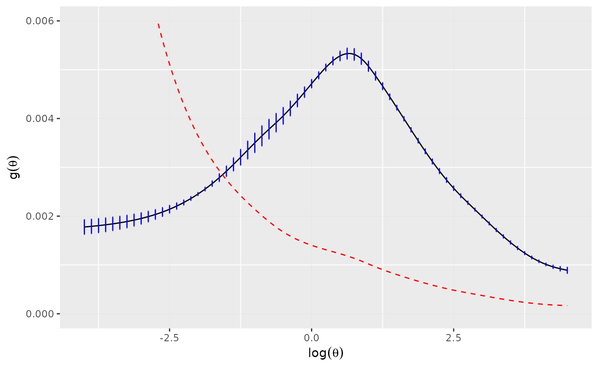
We can now plot the posterior estimates.
gPost <- sapply(seq_len(100), function(i) local({tg <- d$tg * result$P[i, ]; tg / sum(tg)}))
plots <- lapply(c(1, 2, 4, 8), function(i) {
ggplot() +
geom_line(mapping = aes(x = tau, y = gPost[, i])) +
labs(x = expression(theta), y = expression(g(theta)),
title = sprintf("x = %d", i))
})
plots <- Map(f = function(p, xlim) p + xlim(0, xlim), plots, list(6, 8, 14, 20))
plot_grid(plotlist = plots, ncol = 2)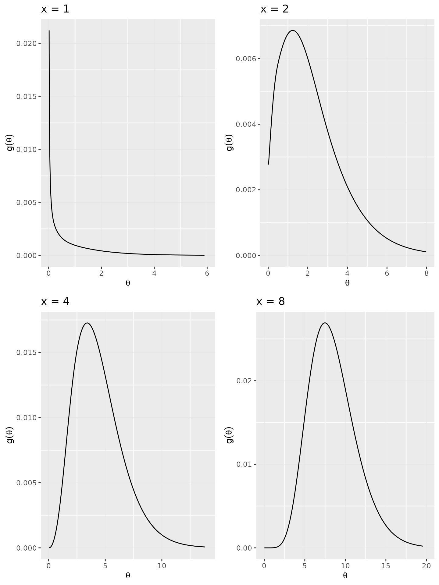
Bootstrap Comparison
As a check, one can perform a parametric bootstrap using \[ y^{*} \sim Mult_n(N, {\mathbf f}) \] with the MLE \(\hat{\mathbf f} = {\mathbf f}(\hat{\alpha})\). We use 200 bootstrap replcates to compute the standard errors for \(\hat{g}\) and compare them to the theoretical values in the plot below. The agreement is pretty good.
set.seed(1783)
B <- 200
fHat <- as.numeric(result$P %*% d$g)
fHat <- fHat / sum(fHat)
yStar <- rmultinom(n = B, size = sum(bardWordCount), prob = fHat)
gBoot <- apply(yStar, 2,
function(y) deconv(tau = tau, y = y, n = 100, c0 = 2)$stats[, "g"])
seG <- apply(gBoot, 1, sd)
ggplot(data = d) +
geom_line(mapping = aes(x = lambda, y = SE.g,
color = "Theoretical", linetype = "Theoretical")) +
geom_line(mapping = aes(x = lambda, y = seG,
color = "Bootstrap", linetype = "Bootstrap")) +
scale_color_manual(name = "Legend",
values = c("Bootstrap" = "black", "Theoretical" = "red")) +
scale_linetype_manual(name = "Legend",
values = c("Bootstrap" = "solid", "Theoretical" = "dashed")) +
theme(legend.title = element_blank()) +
labs(x = expression(log(theta)), y = expression(sigma(hat(g))))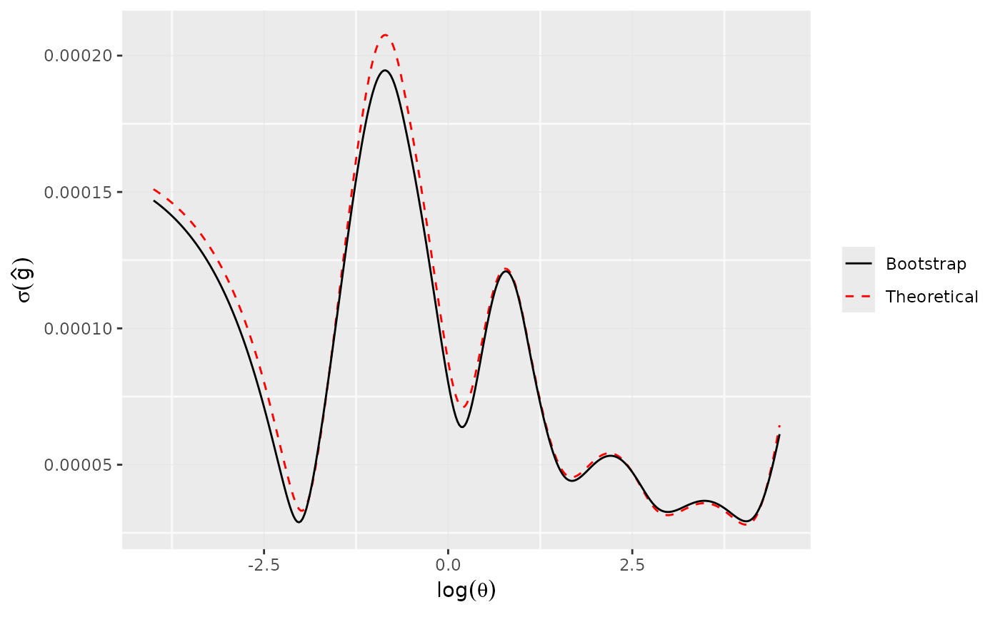
Predict ratio of new distinct words
Suppose then that a previously unknown Shakespearean corpus of length \(t\times C\) were found, \(C\times 900,000\) the length of the known canon. Assuming a Poisson process model with intensity \(\Theta_i\) for word \(i\), the probability that word \(i\) did not appear in the canon but does appear in the new corpus is \[ e^{-\Theta_i}\left(1-e^{-\Theta_it}\right); \] yielding after some work, an estimate for \(R(t)\), the expected number of distinct new words found, divided by \(N\), the observed number of distinct words in the canon: \[ R(t)=\sum_{j=1}^m\hat{g}_jr_j(t), \] with \[ r_j=\frac{e^{-\theta_{(j)}}}{1-e^{-\theta_{(j)}}}\left(1-e^{-\theta_{(j)}t}\right). \]
We can compute the \(R(t)\) and plot it as follows.
gHat <- stats[, "g"]
Rfn <- function(t) {
sum( gHat * (1 - exp(-tau * t)) / (exp(tau) - 1) )
}
r <- sapply(0:10, Rfn)
ggplot() +
geom_line(mapping = aes(x = 0:10, y = r)) +
labs(x = "time multiple t", y = expression(R(t)))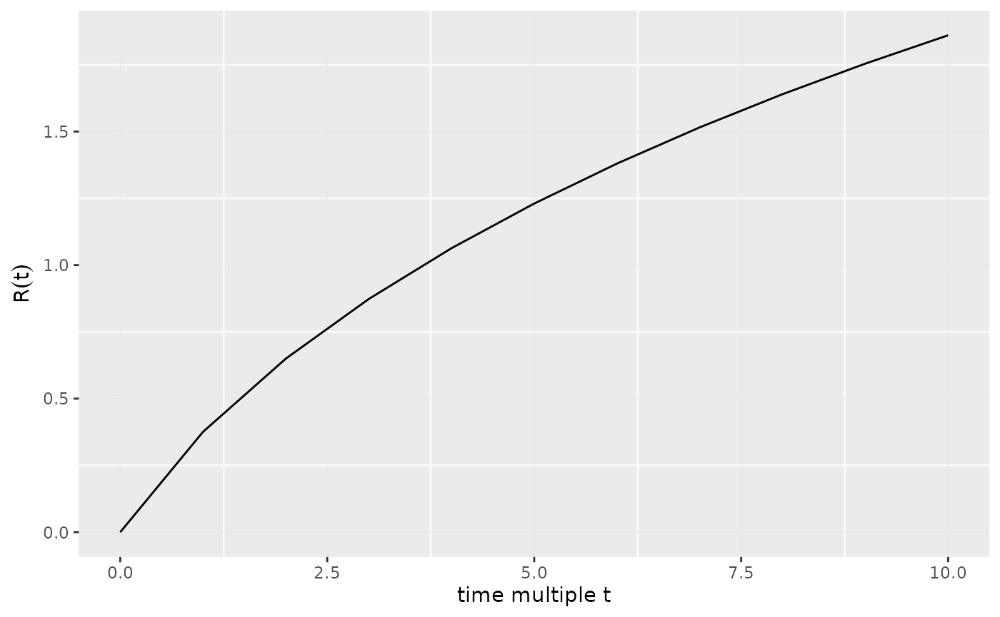
And the (speculative) doubling time for Shakespeare’s vocabulary is easy to compute too.
## [1] 3.653132Normal Example
Consider a data set that is generated via the following mechanism.
\[ z_i \sim N(\mu_i, 1), \mbox{ $i = 1,2,\ldots, N = 10,000$} \]
with
\[ \mu_i= \begin{cases} 0, & \mbox{with probability .9}\\ N(-3, 1), & \mbox{with probability .1}\\ \end{cases} \]
set.seed(129023)
N <- 10000
pi0 <- .90
data <- local({
nullCase <- (runif(N) <= pi0)
muAndZ <- t(sapply(nullCase, function(isNull) {
if (isNull) {
mu <- 0
c(mu, rnorm(1))
} else {
mu <- rnorm(1, mean = -3)
c(mu, rnorm(1, mean = mu))
}
}))
data.frame(nullCase = nullCase, mu = muAndZ[, 1], z = muAndZ[, 2])
})Below is a histogram of the data (\(z\) values) and that of the \(\Theta\)s.
p1 <- ggplot(mapping = aes(x = data$z)) +
geom_histogram(mapping = aes(y = ..count.. / sum(..count..) ),
color = "brown", bins = 60, alpha = 0.5) +
labs(x = "z", y = "Density")
p2 <- ggplot(mapping = aes(x = data$mu)) +
geom_histogram(mapping = aes(y = ..count.. / sum(..count..) ),
color = "brown", bins = 60, alpha = 0.5) +
labs(x = expression(theta), y = "Density")
plot_grid(plotlist = list(p1, p2), ncol = 2)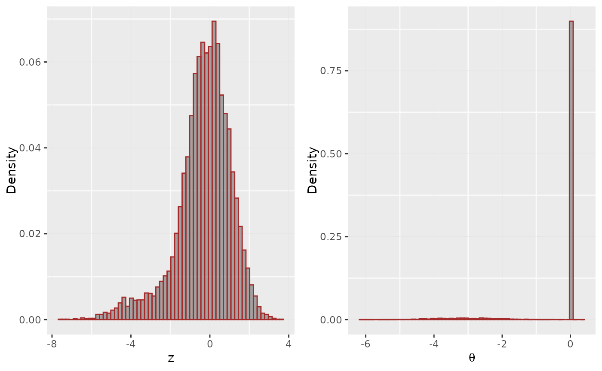
Now we deconvolve this using \(\mathcal{T} = (-6, -5.75,\ldots, 3)\) and a spike at zero and a fifth-degree polynomial.
tau <- seq(from = -6, to = 3, by = 0.25)
atomIndex <- which(tau == 0)
result <- deconv(tau = tau, X = data$z, deltaAt = 0, family = "Normal", pDegree = 5)The estimates and the standard errors of the penalized MLE \(\hat{g}\) with c0 = 1 are
shown below.
knitr::kable(result$stats)| theta | g | SE.g | G | SE.G | Bias.g |
|---|---|---|---|---|---|
| -6.00 | 0.0001755 | 0.0001139 | 0.0001755 | 0.0001139 | 0.0002100 |
| -5.75 | 0.0003137 | 0.0001627 | 0.0004892 | 0.0002764 | 0.0002944 |
| -5.50 | 0.0005542 | 0.0002188 | 0.0010434 | 0.0004943 | 0.0003817 |
| -5.25 | 0.0009558 | 0.0002710 | 0.0019991 | 0.0007611 | 0.0004355 |
| -5.00 | 0.0015902 | 0.0003068 | 0.0035893 | 0.0010496 | 0.0003936 |
| -4.75 | 0.0025218 | 0.0003396 | 0.0061111 | 0.0013181 | 0.0001835 |
| -4.50 | 0.0037665 | 0.0004384 | 0.0098775 | 0.0015480 | -0.0002271 |
| -4.25 | 0.0052352 | 0.0006237 | 0.0151127 | 0.0017954 | -0.0007502 |
| -4.00 | 0.0067030 | 0.0007782 | 0.0218157 | 0.0021384 | -0.0011392 |
| -3.75 | 0.0079323 | 0.0008168 | 0.0297481 | 0.0025338 | -0.0011786 |
| -3.50 | 0.0087575 | 0.0007875 | 0.0385055 | 0.0028572 | -0.0008249 |
| -3.25 | 0.0091050 | 0.0008190 | 0.0476105 | 0.0030494 | -0.0001984 |
| -3.00 | 0.0089988 | 0.0009356 | 0.0566093 | 0.0031703 | 0.0004827 |
| -2.75 | 0.0085341 | 0.0010240 | 0.0651434 | 0.0033244 | 0.0009991 |
| -2.50 | 0.0078394 | 0.0010049 | 0.0729829 | 0.0035304 | 0.0012035 |
| -2.25 | 0.0070391 | 0.0009187 | 0.0800220 | 0.0036975 | 0.0010485 |
| -2.00 | 0.0062096 | 0.0009410 | 0.0862315 | 0.0037737 | 0.0006476 |
| -1.75 | 0.0053923 | 0.0011197 | 0.0916239 | 0.0038631 | 0.0001722 |
| -1.50 | 0.0046182 | 0.0013216 | 0.0962421 | 0.0041634 | -0.0002559 |
| -1.25 | 0.0039083 | 0.0014443 | 0.1001503 | 0.0047866 | -0.0005669 |
| -1.00 | 0.0032743 | 0.0014544 | 0.1034247 | 0.0056648 | -0.0007344 |
| -0.75 | 0.0027209 | 0.0013594 | 0.1061456 | 0.0066420 | -0.0007631 |
| -0.50 | 0.0022468 | 0.0011884 | 0.1083923 | 0.0075782 | -0.0006763 |
| -0.25 | 0.0018442 | 0.0009889 | 0.1102365 | 0.0083898 | -0.0005154 |
| 0.00 | 0.8846685 | 0.0103603 | 0.9949050 | 0.0032481 | -0.0007798 |
| 0.25 | 0.0012121 | 0.0006634 | 0.9961171 | 0.0026657 | -0.0001414 |
| 0.50 | 0.0009670 | 0.0005580 | 0.9970841 | 0.0021484 | 0.0000199 |
| 0.75 | 0.0007616 | 0.0004773 | 0.9978457 | 0.0016891 | 0.0001464 |
| 1.00 | 0.0005909 | 0.0004069 | 0.9984366 | 0.0012899 | 0.0002343 |
| 1.25 | 0.0004510 | 0.0003385 | 0.9988876 | 0.0009551 | 0.0002847 |
| 1.50 | 0.0003383 | 0.0002718 | 0.9992259 | 0.0006855 | 0.0003024 |
| 1.75 | 0.0002500 | 0.0002114 | 0.9994759 | 0.0004756 | 0.0002951 |
| 2.00 | 0.0001824 | 0.0001602 | 0.9996583 | 0.0003163 | 0.0002713 |
| 2.25 | 0.0001318 | 0.0001191 | 0.9997901 | 0.0001977 | 0.0002386 |
| 2.50 | 0.0000945 | 0.0000875 | 0.9998846 | 0.0001104 | 0.0002027 |
| 2.75 | 0.0000674 | 0.0000639 | 0.9999520 | 0.0000466 | 0.0001677 |
| 3.00 | 0.0000480 | 0.0000466 | 1.0000000 | 0.0000000 | 0.0001360 |
Per the above table, the estimated probability of \(\mu = 0\) is 0.885 \(\pm\) 0.01 with a bias of about -0.001.
We can now plot the \(g\)-estimate removing the atom at 0.
gData <- as.data.frame(result$stats[-atomIndex, c("theta", "g")])
gData$g <- gData$g / sum(gData$g)
ggplot(data = gData) +
geom_line(mapping = aes(x = theta, y = g)) +
geom_line(mapping = aes(x = theta, y = dnorm(theta, mean = -3)),
color = "red") +
labs(x = expression(theta), y = expression(g(theta)))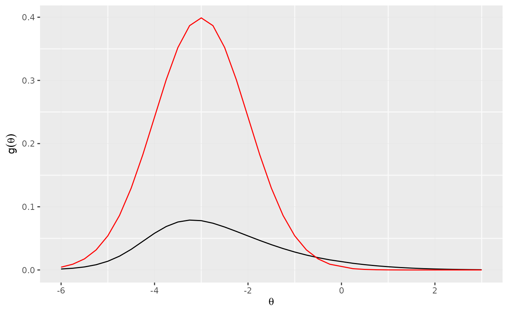
The density approximation is not accurate at all, however, the posterior estimates for the g’s are similar to what one obtains by the Benjamini-Yekutieli procedure as shown below.
- Sort the \(p\)-values.
- Compute \(R\), the number of discoveries and count the number of false discoveries
## FCR
q <- 0.05
R <- max(which(p <= seq_len(N) * q / N))
discIdx <- orderP[1:R]
disc <- data[discIdx, ]
cat("BY_q procedure discoveries", R, "cases,", sum(disc$nullCase),
"actual nulls among them.\n")## BY_q procedure discoveries 610 cases, 22 actual nulls among them.- Construct Benjamini-Yekutieli and Bayes confidence intervals.
alphaR <- 1 - R * q / N
zAlpha <- qnorm(alphaR, lower.tail = FALSE)
zMarker <- max(disc$z)
xlim <- c(-7.6, 0.0)
ylim <- c(-10, 0.0)
BY.lo <- c(xlim[1] - zAlpha, xlim[2] - zAlpha)
BY.up <- c(xlim[1] + zAlpha, xlim[2] + zAlpha)
Bayes.lo <- c(0.5 * (xlim[1] - 3) - 1.96 / sqrt(2), 0.5 * (xlim[2] - 3) - 1.96 / sqrt(2))
Bayes.up <- c(0.5 * (xlim[1] - 3) + 1.96 / sqrt(2), 0.5 * (xlim[2] - 3) + 1.96 / sqrt(2))- Compute the estimated posterior density for of \(\mu\) given \(z\) and construct the 95% credible intervals for \(\mu\) given \(z\).
d <- data[order(data$mu), ]
muVals <- unique(d$mu)
s <- as.data.frame(result$stats)
indices <- findInterval(muVals, s$theta) + 1
gMu <- s$g[indices]
st <- seq(min(data$z), -2.0, length.out = 40)
gMuPhi <- sapply(st, function(z) gMu * dnorm(z - muVals))
g2 <- apply(gMuPhi, 2, function(x) cumsum(x)/sum(x))
pct <- apply(g2, 2, function(dist) approx(y = muVals, x = dist, xout = c(0.025, 0.975)))
qVals <- sapply(pct, function(item) item$y)- Plot it
ggplot() +
geom_line(mapping = aes(x = xlim, y = BY.lo), color = "blue") +
geom_line(mapping = aes(x = xlim, y = BY.up), color = "blue") +
geom_line(mapping = aes(x = xlim, y = Bayes.lo), color = "magenta",
linetype = "dashed") +
geom_line(mapping = aes(x = xlim, y = Bayes.up), color = "magenta",
linetype = "dashed") +
geom_point(mapping = aes(x = disc$z, y = disc$mu), color = "red") +
geom_point(mapping = aes(x = disc$z[disc$nullCase], y = disc$mu[disc$nullCase]),
color = "orange") +
geom_line(mapping = aes(x = rep(zMarker, 2), y = c(-10, 1))) +
geom_line(mapping = aes(x = st, y = qVals[1, ]), color = "brown") +
geom_line(mapping = aes(x = st, y = qVals[2, ]), color = "brown") +
labs(x = "Observed z", y = expression(mu)) +
annotate("text", x = -1, y = -4.25, label = "BY.lo") +
annotate("text", x = -1, y = 1.25, label = "BY.up") +
annotate("text", x = -7.5, y = -6.1, label = "Bayes.lo") +
annotate("text", x = -7.5, y = -3.4, label = "Bayes.up") +
annotate("text", x = -2.0, y = -1.75, label = "EB.lo") +
annotate("text", x = -2.0, y = -3.9, label = "EB.up") +
annotate("text", x = zMarker, y = 1.25, label = as.character(round(zMarker, 2)))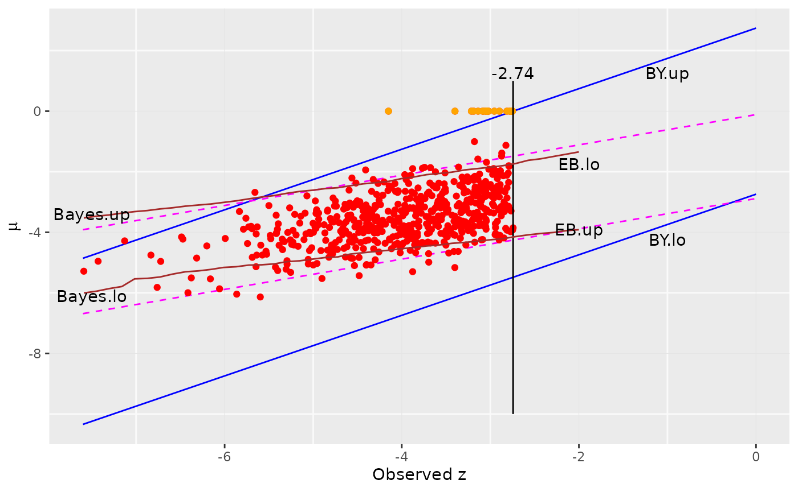
Another Normal example (Twin Towers)
In the first normal example, the \(\theta\) distribution had a significant atom at 0 and the rest of the density was smeared around -3. We now investigate what happens when the \(\theta\) distribution is clearly bimodal. Below is a histogram of the the \(\theta\) and alongside a histogram of the data, generated using \(X_i \sim N(\theta_i, 1)\).
p1 <- ggplot(mapping = aes(x = disjointTheta)) +
geom_histogram(mapping = aes(y = ..count.. / sum(..count..) ),
color = "brown", bins = 60, alpha = 0.5) +
labs(x = expression(theta), y = "Density")
set.seed (2332)
z <- rnorm(n = length(disjointTheta), mean = disjointTheta)
p2 <- ggplot(mapping = aes(x = z)) +
geom_histogram(mapping = aes(y = ..count.. / sum(..count..) ),
color = "brown", bins = 60, alpha = 0.5) +
labs(x = "z", y = "Density")
plot_grid(plotlist = list(p1, p2), ncol = 2)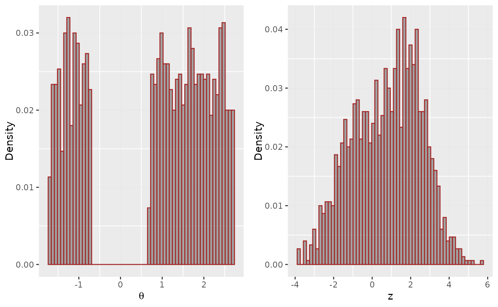
We deconvolve the data, using various values for the spline degrees of freedom.
tau <- seq(from = -4, to = 6, by = 0.2)
plots1 <- lapply(2:8,
function(p) {
result <- deconv(tau = tau, X = z, family = "Normal", pDegree = p)
g <- result$stats[, "g"]
ggplot(mapping = aes(x = disjointTheta)) +
geom_histogram(mapping = aes(y = ..count.. / sum(..count..)),
color = "brown", bins = 60, alpha = 0.2) +
geom_line(mapping = aes(x = tau, y = g), color = "blue") +
labs(x = expression(theta), y = "Density",
title = sprintf("DF = %d", p))
})Choosing the degrees of freedom to be 7, we now examine the effect of regularization parameter \(c0\).
plots2 <- lapply(c(0.5, 1, 2, 4, 8, 16, 32),
function(c0) {
result <- deconv(tau = tau, X = z, family = "Normal", pDegree = 6,
c0 = c0)
g <- result$stats[, "g"]
ggplot(mapping = aes(x = disjointTheta)) +
geom_histogram(mapping = aes(y = ..count.. / sum(..count..)),
color = "brown", bins = 60, alpha = 0.2) +
geom_line(mapping = aes(x = tau, y = g), color = "blue") +
labs(x = expression(theta), y = "Density",
title = sprintf("C0 = %.1f", c0))
})
plots <- mapply(function(x, y) list(x, y), plots1, plots2)
plot_grid(plotlist = plots, ncol = 2)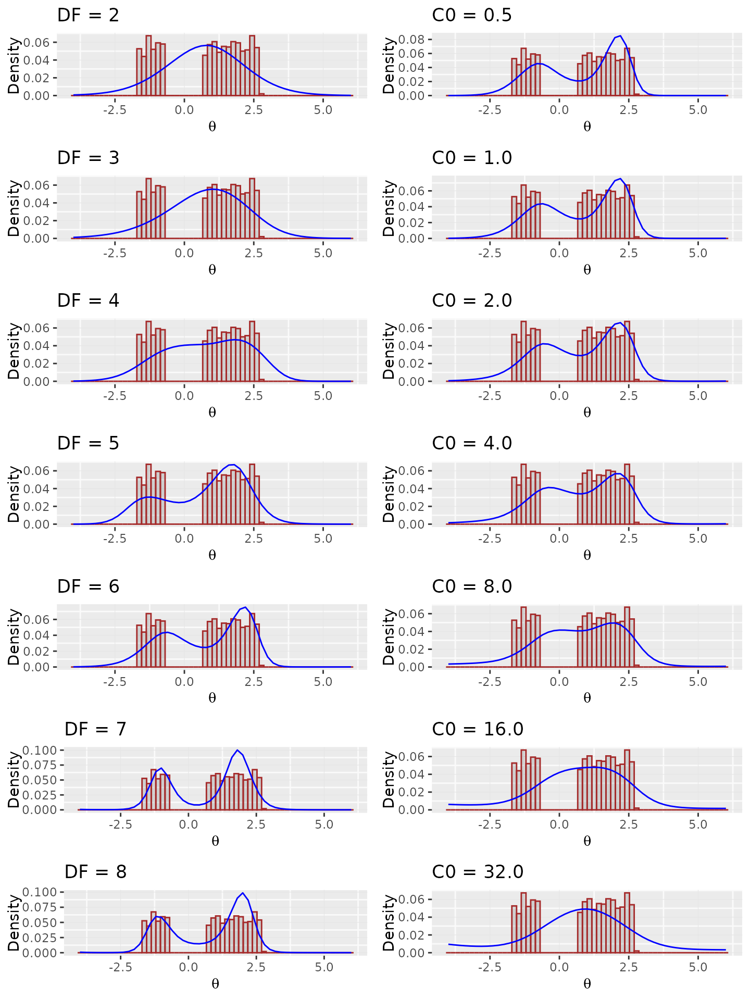
The quantity \(S(\alpha)\) is a
measure of the strength of the penalty term \(c_0\) and is returned by
deconv in the result list as a named item S.
Below we vary \(c_0\) and degrees of
freedom from 5 to 7 to gauge the effect of the regularization.
c0_values <- c(.5, 1, 2, 4, 8, 16, 32)
stable <- data.frame(
c0 = c0_values,
`DF 5` = sapply(c0_values, function(c0) deconv(tau = tau, X = z, family = "Normal", pDegree = 5, c0 = c0)$S),
`DF 6` = sapply(c0_values, function(c0) deconv(tau = tau, X = z, family = "Normal", pDegree = 6, c0 = c0)$S),
`DF 7` = sapply(c0_values, function(c0) deconv(tau = tau, X = z, family = "Normal", pDegree = 7, c0 = c0)$S)
)
knitr::kable(stable)| c0 | DF.5 | DF.6 | DF.7 |
|---|---|---|---|
| 0.5 | 0.0010381 | 0.0013048 | 0.0018553 |
| 1.0 | 0.0029450 | 0.0034142 | 0.0042665 |
| 2.0 | 0.0082974 | 0.0090723 | 0.0102037 |
| 4.0 | 0.0236310 | 0.0248144 | 0.0257369 |
| 8.0 | 0.0685852 | 0.0708393 | 0.0697542 |
| 16.0 | 0.1915350 | 0.2039325 | 0.2025109 |
| 32.0 | 0.4831292 | 0.5385301 | 0.5698289 |
A DF of 6 or 7 captures the bimodality and a choice of \(c_0 < 4\) would avoid excessive penalization.
Binomial Example
The dataset surg contains data on intestinal surgery on
844 cancer patients. In the study, surgeons removed satellite
nodes for later testing. The data consists of pairs \((n_i, X_i)\) where \(n_i\) is the number of satellites removed
and \(X_i\) is the number found to be
malignant among them.
We assume a binomial model with \(X_i \sim Binomial(n_i, \theta_i)\) with \(\theta_i\) being the probability of any one satellite site being malignant for the \(i\)th patient.
We take \(\mathcal{T} = (0.01, 0.02,\ldots, 0.09)\), so \(m = 99.\) We take \(Q\) to be the default 5-degree natural spline with columns standardized to mean 0 and sum of squares equal to 1. The penalization parameter is set to 1. The figure below shows the estimated prior density of \(g(\theta)\).
tau <- seq(from = 0.01, to = 0.99, by = 0.01)
result <- deconv(tau = tau, X = surg, family = "Binomial", c0 = 1)
d <- data.frame(result$stats)
indices <- seq(5, 99, 5)
errorX <- tau[indices]
ggplot() +
geom_line(data = d, mapping = aes(x = tau, y = g)) +
geom_errorbar(data = d[indices, ],
mapping = aes(x = theta, ymin = g - SE.g, ymax = g + SE.g),
width = .01, color = "blue") +
labs(x = expression(theta), y = expression(paste(g(theta), " +/- SE")))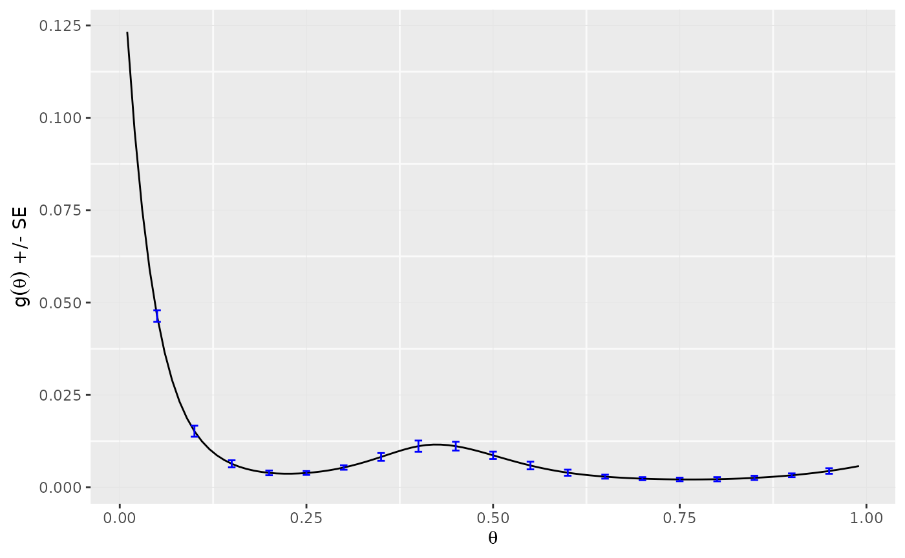
The complete table of estimates and standard errors is also available.
knitr::kable(d[indices, ], row.names = FALSE)| theta | g | SE.g | G | SE.G | Bias.g |
|---|---|---|---|---|---|
| 0.05 | 0.0463457 | 0.0015738 | 0.4000686 | 0.0187280 | -0.0001386 |
| 0.10 | 0.0151816 | 0.0014905 | 0.5227891 | 0.0179368 | 0.0005557 |
| 0.15 | 0.0063608 | 0.0009530 | 0.5679756 | 0.0177951 | 0.0004028 |
| 0.20 | 0.0039081 | 0.0006332 | 0.5910638 | 0.0182757 | 0.0002736 |
| 0.25 | 0.0038724 | 0.0005167 | 0.6098155 | 0.0187490 | 0.0002012 |
| 0.30 | 0.0053573 | 0.0005917 | 0.6330463 | 0.0188231 | 0.0000993 |
| 0.35 | 0.0082256 | 0.0010482 | 0.6679794 | 0.0180358 | -0.0001306 |
| 0.40 | 0.0111402 | 0.0015163 | 0.7184355 | 0.0170109 | -0.0004107 |
| 0.45 | 0.0111343 | 0.0011809 | 0.7755223 | 0.0167801 | -0.0003743 |
| 0.50 | 0.0086588 | 0.0009940 | 0.8242825 | 0.0155204 | -0.0000980 |
| 0.55 | 0.0058962 | 0.0010407 | 0.8590792 | 0.0135817 | 0.0001197 |
| 0.60 | 0.0039564 | 0.0008251 | 0.8823476 | 0.0125338 | 0.0002037 |
| 0.65 | 0.0028839 | 0.0005341 | 0.8986379 | 0.0120984 | 0.0002143 |
| 0.70 | 0.0023398 | 0.0004140 | 0.9112647 | 0.0114461 | 0.0002039 |
| 0.75 | 0.0021301 | 0.0004763 | 0.9222208 | 0.0103935 | 0.0001911 |
| 0.80 | 0.0021935 | 0.0005645 | 0.9329514 | 0.0092023 | 0.0001796 |
| 0.85 | 0.0025512 | 0.0005742 | 0.9448671 | 0.0082261 | 0.0001632 |
| 0.90 | 0.0032568 | 0.0005083 | 0.9595831 | 0.0072551 | 0.0001253 |
| 0.95 | 0.0044141 | 0.0007505 | 0.9791329 | 0.0048537 | 0.0000355 |
The empirical Bayes estimate of the prior distribution puts most of its mass on the small values as can be seem below.
## Mass below .20 = 0.59## Mass above .80 = 0.07Posterior Estimates
The posterior distribution of \(\theta_i\) given \((n_i, X_i)\) is computed using Bayes rule as
\[ \hat{g} (\theta | X_i = x_i, n_i) = \frac{g_{\hat{\alpha}} (\theta) {n_i \choose x_i} \theta^{x_i} (1 - \theta)^{n_i-x_i}} {f_{\hat{\alpha}}(n_i, x_i)} \]
where the denominator is given by
\[ f_\alpha(n_i, x_i) = \int_0^1{n_i \choose x_i} \theta^{x_i}(1-\theta)^{n_i-x_i}g_\alpha(\theta)\,d\theta. \]
with the mle \(\hat{\alpha}\) in place of \(\alpha\).
Since \(g(\theta)\) is discrete, the integrals are mere sums as shown below.
theta <- result$stats[, 'theta']
gTheta <- result$stats[, 'g']
f_alpha <- function(n_k, x_k) {
## .01 is the delta_theta in the Riemann sum
sum(dbinom(x = x_k, size = n_k, prob = theta) * gTheta) * .01
}
g_theta_hat <- function(n_k, x_k) {
gTheta * dbinom(x = x_k, size = n_k, prob = theta) / f_alpha(n_k, x_k)
}We plot a few posterior distributions.
g1 <- g_theta_hat(x_k = 7, n_k = 32)
g2 <- g_theta_hat(x_k = 3, n_k = 6)
g3 <- g_theta_hat(x_k = 17, n_k = 18)
ggplot() +
geom_line(mapping = aes(x = theta, y = g1), col = "magenta") +
ylim(0, 10) +
geom_line(mapping = aes(x = theta, y = g2), col = "red") +
geom_line(mapping = aes(x = theta, y = g3), col = "blue") +
labs(x = expression(theta), y = expression(g(paste(theta, "|(x, n)")))) +
annotate("text", x = 0.15, y = 4.25, label = "x=7, n=32") +
annotate("text", x = 0.425, y = 4.25, label = "x=3, n=6") +
annotate("text", x = 0.85, y = 7.5, label = "x=17, n=18") 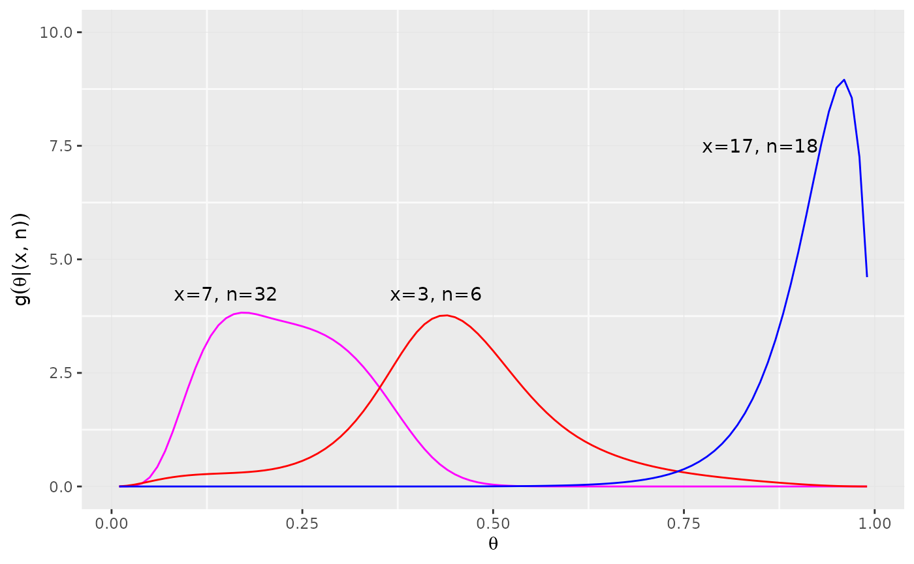
The empirical Bayes posterior estimate \(\theta^{EB}\) for patients 34, 40, and 679 in the dataset for example is
## Empirical Bayes Estimate: 0.453516Bootstrap Comparison
As a check on the estimates of standard error and bias provided by
deconv, we compare the results with what we obtain using a
parametric boostrap.
The boostrap is run as follows. For each of 1000 runs, 844 simulated
realizations \(\hat{\Theta}^*\) are
sampled from density \(\hat{g}.\) Each
gave an \(X_i^* \sim Binomial(n_i,
\Theta_i^*)\) with \(n_i\) the
\(i\)th sample in the original data
set. Finally, \(\hat{\alpha}\) was
computed using deconv.
set.seed(32776)
B <- 1000
gHat <- d$g
N <- nrow(surg)
genBootSample <- function() {
thetaStar <- sample(tau, size = N, replace = TRUE, prob = gHat)
sStar <- sapply(seq_len(N),
function(i)
rbinom(n = 1 , size = surg$n[i], prob = thetaStar[i]))
data.frame(n = surg$n, s = sStar)
}
bootResults <- lapply(seq_len(B),
function(k) {
surgBoot <- genBootSample()
mat <- deconv(tau = tau, X = surgBoot, family = "Binomial",
c0 = 1)$stats
mat[, c("g", "Bias.g")]
})
gBoot <- sapply(bootResults, function(x) x[, 1])
BiasBoot <- sapply(bootResults, function(x) x[, 2])
indices <- c(seq(1, 99, 11), 99)
table2 <- data.frame(theta = tau,
gTheta = round(gHat * 100, 3),
sdFormula = round(d$SE.g * 100, 3),
sdSimul = round(apply(gBoot, 1, sd) * 100, 3),
BiasFormula = round(d$Bias.g * 100, 3),
BiasSimul = round(apply(BiasBoot, 1, mean) * 100, 3))[ indices, ]We print out some estimated quantities for comparison.
knitr::kable(table2, row.names = FALSE)| theta | gTheta | sdFormula | sdSimul | BiasFormula | BiasSimul |
|---|---|---|---|---|---|
| 0.01 | 12.326 | 0.870 | 0.911 | -0.482 | -0.543 |
| 0.12 | 1.033 | 0.127 | 0.135 | 0.051 | 0.058 |
| 0.23 | 0.369 | 0.054 | 0.061 | 0.023 | 0.027 |
| 0.34 | 0.757 | 0.093 | 0.091 | -0.007 | -0.008 |
| 0.45 | 1.113 | 0.118 | 0.113 | -0.037 | -0.036 |
| 0.56 | 0.543 | 0.102 | 0.097 | 0.015 | 0.016 |
| 0.67 | 0.262 | 0.046 | 0.049 | 0.021 | 0.024 |
| 0.78 | 0.213 | 0.053 | 0.050 | 0.018 | 0.018 |
| 0.89 | 0.308 | 0.052 | 0.046 | 0.014 | 0.013 |
| 0.99 | 0.575 | 0.158 | 0.157 | -0.010 | -0.014 |